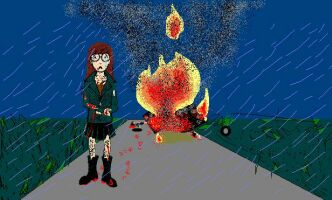

Art Gallery
"Last Concert" by Delenore
(Delenore@aol.com)
Art Gallery
"Last Concert" by Delenore
(Delenore@aol.com)
|
**Please, do not copy this without my permission. My art is special to me...** The concert we saw went quite well that dark night; Mystic Spiral had played perfectly. But the highlight came when Trent gazed in my direction And dedicated a song to me. His deep baby blues met my own windowed frames, And the lights had turned soft and dim. I sighed and I flushed, and my poor heart burst With the love that I felt for him. I wished that the song would continue for years But, sadly, it came to an end. Then the concert was over, and Jane and I went to meet with my new more-than-friend. We all had decided to go celebrate At the diner for a job well done. We talked and we laughed the whole night away- I was actually having some fun. After we'd all had our fill of the food And Jessie had his fill of beer, We all headed out to the stoic old Tank, With me hand in hand with my dear. Trent was exhausted and not fit to drive, So Jessie sat behind the wheel. I didn't think it was safe to go with, But Jane said it was no big deal. So I trusted her judgement and climbed in the back, And Jessie backed out on the road. It started to rain, which would be quite ironic If we'd seen what was to unfold. We rode for an hour, Trent asleep in the front, And I stared at him all of the way. Jane noticed and gave me a questioning look, So I explained the events of the day. She began to respond, when I glanced at the dashboard And saw we were going 83. Jessie was laughing, and the lights of the car Heading toward us was all I could see. I yelled and Jane screamed as Jess swerved to the right, And the other car bounced off our rear. We spiraled, screaming, and the last thing I saw Were Trent's sleepy eyes widened with fear. We ricocheted off a large tree, and I Was thrown out of the window, which broke. I hurtled through the air, scared out of my mind And choking on thick, black smoke. I skidded in glass, and when I came to a stop, I heard some one give out a small moan. Jane was 3 feet away, and I realized the blood I lay in was not all my own. By a miracle, I lived, so like any scared fool, I ran despite all my pain. I was thrown to the ground as the van ignited, Exploded, and burst into flames. I couldn't go back, for fear I'd be burned, So I watched as my closest friends died. And, disconcerted, out of options, I turned Away, sat down, and I cried. So I sit in this pew dressed in black head to toe And stare at the caskets of white. Lined up in a row, closed, and covered with flowers, Three friends bask in eternal light. As I walk by the first, bitter hate burns my tongue. Second, sorrow for the friend I will miss. As I get to the third, I drop to my knees And upon it bestow my first kiss. |
|
 (Click on the image to see the full-size picture) |
{kind=link}